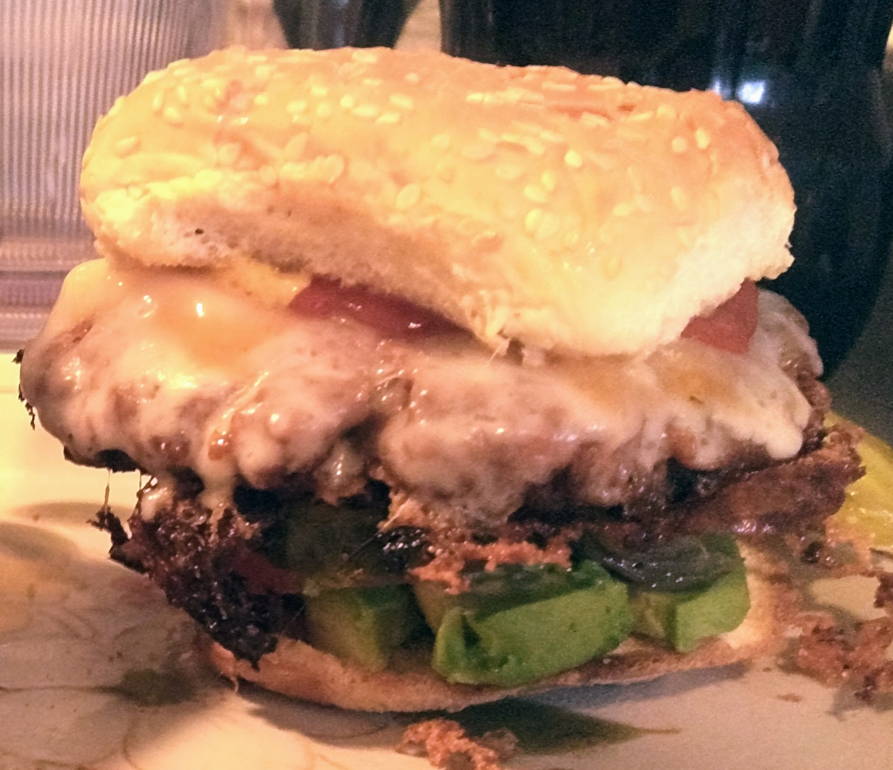

Korb's Guide to Alaskan Cuisine
Home About Venison Pot Pie Bhudda Bowls
Salmon Burgers
Ok. I know this is a sad burger. If I had known I'd be announcing it to the world, I'd have used something other than a potato to take the picture and maybe tried to pretty it up a little. Leave me alone. It tasted yummy.

Ingredients:
- Hunk o salmon
- Bread crumbs
- Egg
- White onion
- Burger buns
- Swiss cheese
- Dill pickles
- Dill
- Hot sauce
- Tartar sauce
- Tomato
- Lettuce
- Avocado
What do?
- Cut salmon into small cubes
- Add 1/4 cup diced white onion, chopped dill, 1/4 cup bread crumbs, egg, salt, and pepper. Massage until mixed.
- Form salmon burger patties. If they're too wet, add more bread crumbs and reform.
- In a few tbsp oil, cook those baddies. Add cheese toward the end.
- Assemble burger with raw onion slices, dill pickles, hot sauce, tartar sauce, tomato, avocado, and lettuce.
- Monch.